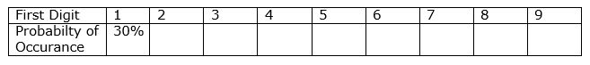

An analyst’s selfie stick
Brace yourself for I am going to start off with a mathematical question. Suppose I give you a book of 1,000 pages and ask you what the probability of one being the first digit of a random page number will be, what will you tell me? I bet most you will assume equal probability and tell me it is 11%, right? Here is where I am going to, rather haughtily, tell you that it is not equal probability. Oops did I just say ‘haughtily’? I actually owe to one of my professors for asking me to research on “Benford’s law”. And what an insight it was!
For the benefit of people like me who quiver at the word, mathematics, let’s take a simple situation. Suppose a stick is 10units long. Its leading digit is now 1. For the leading digit to change to 2, if we are to assume that the stick keeps growing in length constantly, the stick must grow to 20units; this is two times its original length or a growth% of 100. By extending this exercise for all 9 digits, growth% over sum of growth percentages is can be drawn up.
This simple exercise was thought worth its mention here to drive home the point that first digits following a pattern, and the pattern not being uniform probability, is not a rule laid down at Hogwarts, the school of magic; But that certain geniuses of the ‘muggle world’ put in good effort to research, with the help of more complicated mathematical techniques, to establish a pattern.
Astronomer Simon Newcomb was the first to notice a pattern in distribution of first digits in his log table book. This phenomenon was later tested and confirmed by a physicist, Frank Benford (and as with the case of most ‘laws’, hence the name!)
So trusting the work of these geniuses, here is the answer to our earlier question - the probability that 1 will be the first digit of a random page number of a book is around 30%. The probability is said to keep diluting in a non-uniform pattern as we go up the digit ladder. Yes, the probability of 9 being the first digit is the least of all; around 4%. What’s more? These geniuses have laid down such pattern for not only the first digit but also for the second digit, third digit, last digit, first two digits, last two digits and first three digits. For your convenience, we’ll lay down the pattern for the first digit here. Others can of course be pulled out from the ‘Google’ library.
A couple of basic pre-requisites for the law to work are that the numbers should be of the same attribute (eg. same currency) and numbers should not be within a pre-defined range. Where a sample is selected, the sample must be large enough for the digit pattern to emerge. The law works on most naturally occurring data except in cases where the numbers are truly random and where the data lies in a pre-defined range of values.
Knowledge of this digit analysis is now gaining increasing importance; for, this law is now often being used as a tool to detect financial fraud and to check data integrity. Financial audit firms use this law in their journal entry testing process; Macroeconomic analysts and forensics use the law as a check on data integrity; In the United States, evidence based on Benford's law has been admitted in criminal cases. This law has, in the past, questioned the validity of 2009 Iranian elections, has speculated on the probable fraudulence in the macro economic data provided by the Greek government to the EU before joining the Euro Zone, has raised concerns on the reliability of Chinese economic data on examination of the quarterly GDP growth rate of China from December 1991 to September 2012.
We might not be an audit firm or a fraud detecting agency. Nevertheless, familiarity with this law helps us to perform a basic check on the effectiveness of our basic control mechanism. While tools like IDEA and ACL generate a ready-made report, Benford’s law analysis can be easily performed using excel, by putting ‘left’ formula and the ‘count’ function in pivot table to good ploy.
Digit analysis is thus a good a selfie stick to click a picture of our own state of affairs. #HappySelfieing.